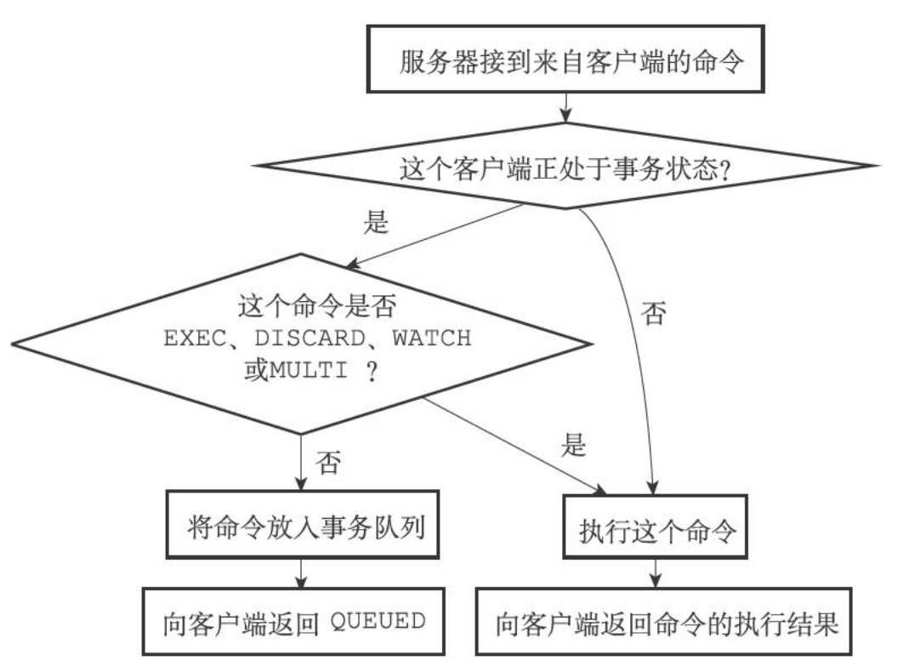
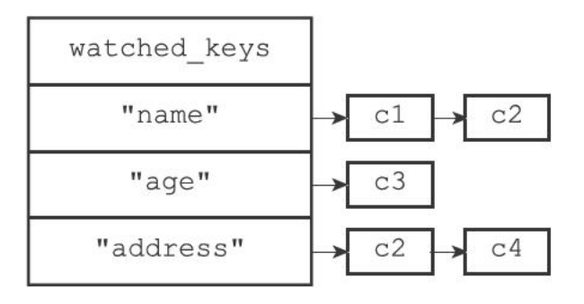
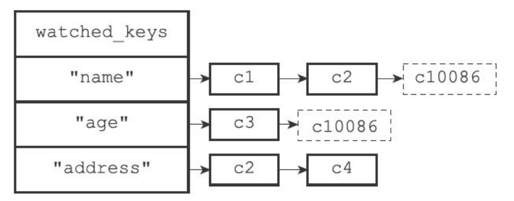
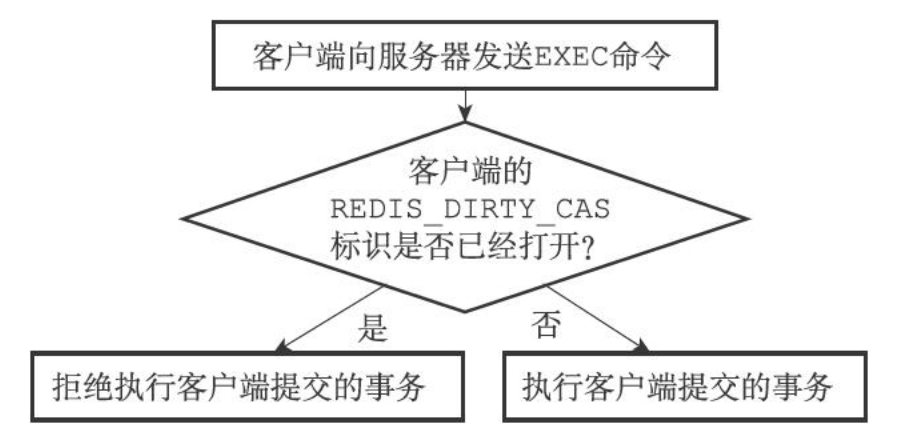

Redis事务

Redis 通过 MULTI、EXEC、WATCH 等命令来实现事务功能。事务提供一种将多个命令请求打包，然后一次性、按顺序地执行多个命令的机制。
以下是一个事务的执行过程，该事务首先以一个 MULTI 命令为开始，接着将多个命令放入事务中，最后由 EXEC 命令将这个事务提交给服务器执行：
1 | redis> MULTI |
事务的实现
一个事务从开始到结束通常会经历以下三个阶段：
- 事务开始。
- 命令入队。
- 事务执行。
事务开始
MULTI 命令的执行标志着事务的开始：
1 | redis> MULTI |
MULTI 命令可以将执行该命令的客户端从非事务状态切换到事务状态，这一切换是通过在客户端状态的 flags 属性中打开 REDIS_MULTI 标识来完成的，具体实现可以用以下伪代码来表示：
1 | def MULTI(): |
命令入队
当一个客户端还处于非事务状态时，这个客户端发送的命令会立即被服务器执行：
1 | redis> SET "name" "Practical Common Lisp" |
与此不同的是，当一个客户端切换到事务状态之后，服务器会根据这个客户端发来的不同命令执行不同的操作：
- 如果命令为 EXEC、DISCARD、WATCH、MULTI四 个命令中的其中一个，那么服务器会立即执行这个命令。
- 其他的命令不会立即执行，而是将这个命令放入一个事务队列里面，然后向客户端返回 QUEUED 回复。

事务队列
每个 Redis 客户端都有自己的事务状态，这个事务状态保存在客户端状态的 mstate 属性中：
1 | typedef struct redisClient { |
事务状态包含一个事务对象，以及一个已入队命令的计数器（事务队列的长度）：
1 | typedef struct multiState { |
事务队列是一个 multiCmd 类型的数组，数组中每个 multiCmd 结构都保存来一个已入队的命令的相关信息，包含指向命令实现函数的指针、命令参数，以及参数的数量：
1 | typedef struct multiCmd { |
执行事务
当一个处于事务状态的客户端向服务器发送 EXEC 命令时，这个 EXEC 命令会立即被执行。服务器会遍历客户端的事务队列，执行队列中的所有命令，最后将执行的结果全部返回给客户端。
EXEC 的实现原理可以用以下伪代码来描述：
1 | def EXEC(): |
WATCH 命令的实现
WATCH 命令是一个乐观锁，它可以在 EXEC 命令执行前，监视任意数量的键，并在 EXEC 命令执行时，检查被监视的键是否至少有一个被修改过，如果是，服务器拒绝执行事务，并向客户端返回代表事务执行失败的空回复。
注意：EXEC 命令开始执行后遍历事务队列执行事务，因此事务中的修改不对 WATCH 造成影响。
使用 WATCH 命令监视数据库键
每个 Redis 数据库都保存着一个 watched_keys 字典，这个字典的键是某个被 WATCH 命令监视的数据库键，而字典的值则是一个链表，链表中记录了所有监视相应数据库键的客户端：
1 | typedef struct redisDb { |
通过 watched_keys 字典，服务器可以清楚的指导那些数据库键正在被监视，以及哪些客户端正在监视这些数据库键。
假设当前客户端为 c10086,数据库 watched_keys 字典状态为下图所示：

当 c10086 执行以下命令后：
1 | redis> WATCH "name" "age" |
数据库 watched_keys 字典状态变为下图所示：

监视机制的触发
所有对数据库进行修改的命令，在执行之前都会调用 multi.c/touchWatchKey 函数对 watched_keys 字典进行检查，查看是否有客户端正在监视要修改的键，如果有的话，touchWatchKey 函数会将监视被修改键的客户端的 REDIS_DIRTY_CAS 标识打开，标识该客户端的事务安全性已经被破坏。
touchWatchKey 函数的定义可以用以下伪代码来描述：
1 | def touchWatchKey(db, key): |
判断事务是否安全
当服务器接收到客户端发来的 EXEC 命令时，服务器会根据这个客户端是否打开了 REDIS_DIRTY_CAS 标识来决定是否执行事务：

事务的 ACID 性质
在 Redis 中，事务总是具有原子性（Atomicity）、一致性（Consistency）和隔离性（Isolation），某种特定的持久化情况下具有持久性（Durability）。
原子性
事务具有原子性是指，数据库将事务中的多个操作当作一个整体来执行，要么都执行，要么就一个也不执行。
对于 Redis 的事务功能来说，事务队列中的命令要么全部执行，要么就一个都不执行，因此，Redis 的事务是具有原子性的。
例子，成功执行的事务，事务的命令都会被执行：
1 | redis> MULTI |
例子，执行失败的事务，这个事务因为命令入队出错而被服务器拒绝执行，事务的命令都不会执行：
1 | redis> MULTI |
Redis 事务和传统的关系数据库事务最大的区别在于：Redis 不支持事务回滚机制，即时事务队列中的某个命令在执行期间出现了错误，整个事务也会继续执行下去，直到事务执行完毕。
例子，即时 RPUSH 命令在执行期间出现了错误，事务的后续命令也会继续执行下去，并且之前执行的命令也不会有任何影响：
1 | redis> SET msg "hello" |
Redis 的作者在事务功能的文章中解释说：不支持事务回滚是因为这种复杂的功能和 Redis 追求简单高效的设计主旨不相符，并且他认为，Redis 事务的执行时错误通常都是编译错误产生的，这种错误通常只会出现在开发环境中，而很少在实际的生产环境中出现，所以他认为没有必要为 Redis 开发事务回滚功能。
一致性
事务具有一致性指的是，如果数据库在执行事务之前是一致的，那么在执行事务之后，无论事务是否执行成功，数据库也应该仍然是一致的。
“一致”是指数据符合数据库本身的定义和要求，没有包含非法或无效的错误数据。
Redis 通过谨慎的错误检测和简单的设计来保证事务的一致性，以下三部分分别介绍三个 Redis 事务可能出错的地方，并说明 Redis 是如何处理这些错误，从而确保事务的一致性。
1.入队错误
如果一个事务在入队命令的过程中，出现了命令不存在，或者命令的格式不正确等情况，那么 Redis 将拒绝执行这个事务。
例子，因为客户端尝试向事务入队一个不存在的命令 Tang7O，所以客户端提交的事务会被服务器拒绝执行。
1 | redis> MULTI |
因为服务器会拒绝执行入队错误的事务，因此 Redis 事务的一致性不会被带有入队错误的事务影响。
Redis 2.6.5 以前的版本，即时有命令在入队过程中发生了错误，事务一样可以执行，不过被执行的命令只包括哪些正确入队的命令。
2.执行错误
除了入队时可能发生错误外，事务还可能在执行过程中发生错误。
- 执行过程中发生的错误都是一些不能在入队时被服务器发现的错误，这些错误只会在命令实际执行时被触发。
- 即使在事务的执行过程中发生了错误，服务器也不会中断事务的执行，它会继续执行事务中余下的其他命令，并且已经执行的命令不会被出错的命令影响。
例子，用列表键的 RPUSH 命令操作字符串键。
1 | redis> SET msg "hello" |
因为在事务执行的过程中，出错的命令会被服务器识别出来，并进行响应的处理，所以不会对事务的一致性产生影响。
3.服务器停机
如果 Redis 服务器在事务执行过程中停机，那么根据服务器所使用的持久化模式，可能有以下情况出现：
无持久化：重启之后数据库是空白的，因此数据总是一致的。
RDB 持久化：事务中途停机不会导致不一致性，因为服务器可以根据现有的 RDB 文件来恢复数据，从而将数据库还原到一个一致性状态。如果找不到可供使用的 RDB 文件，那么重启之后数据库将是空白的，而空白数据库总是一致的。
- AOF 持久化：服务器可以根据现有的 AOF 文件来恢复数据，从而将数据库还原到一个一致性状态。找不到可供使用的 AOF 文件，那么重启之后数据库将是空白的，而空白数据库总是一致的。
隔离性
事务的隔离性是指：即时数据库有多个事务并发地执行，各个事务之间也不会互相影响，并且在并发的状态下执行的事务和串行执行事务的结果完全相同。
因为 Redis 使用单线程来执行事务，并且服务器保证，在执行事务期间不会对事务进行中断，因此，Redis 的事务总是以串行的方式进行的，并且事务也总是具有隔离性的。
持久性
事务的持久性是指：当一个事务执行完毕时，执行这个事务所获得的结果已经被保存到永久性存储介质（比如硬盘）里面，即时服务器在事务执行完毕之后停机，执行事务所得的结果也不会丢失。
因为 Redis 的事务不过是简单地用队列包裹起了一组 Redis 命令，Redis 并没有为事务提供任何额外的持久化功能，所以 Redis 事务的持久性由 Redis 所使用的持久化模式来决定：
无持久化：事务不具有持久性，一旦服务器停机，包括事务数据在内的所有数据都将丢失。
RDB 持久化：服务器只在特定的保存条件被满足时才会执行 BGSAVE 命令，对数据库进行保存操作，并且异步执行的 BGSAVE 不能保证事务数据第一时间被保存到硬盘里面，因此 RDB 持久模式下的事务也不具有持久性。
AOF 持久化：
appendfsync 选项的值为 always 时，程序总会在执行命令之后调用同步（sync）函数，将命令数据真正的保存到池盘里面，这种配置下的事务是具有持久性的。
appendfsync 选项的值为 everysec 时，程序会每秒同步一次命令数据到磁盘。因此停机可能会恰好发生在等待同步的那一秒内，这可能会造成事务数据丢失，所以这种配置下事务不具有持久性。
- appendfsync 选项的值为 no 时，程序会交由操作系统来决定何时将命令数据同步到硬盘。因此事务数据可能在等待同步的过程中丢失，所以这种模式下不具有持久性。
不论 Redis 在什么模式下运作，在一个事务的后面加上 SAVE 命令总是可以保证事务的持久性：
1 | redis> MULTI |
不过因为这种做法的效率太低，所以不具有实用性。